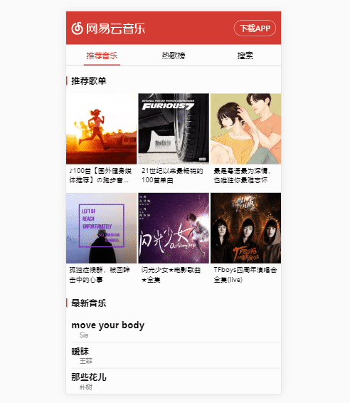
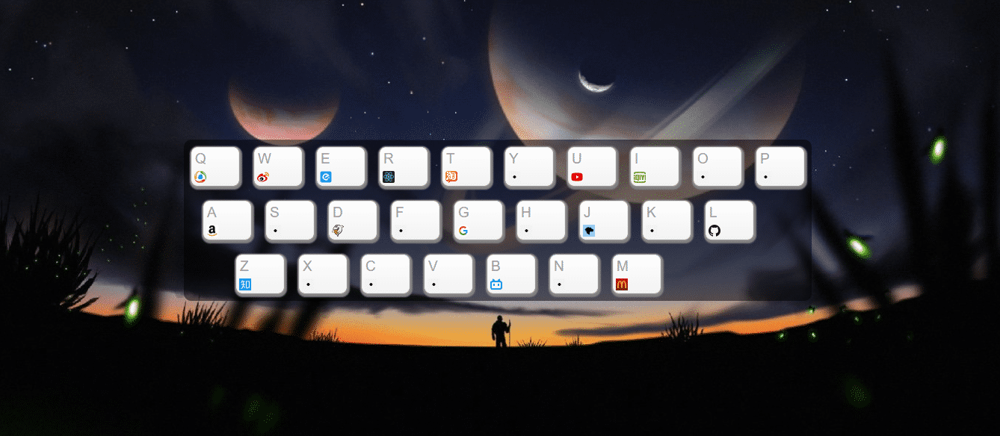
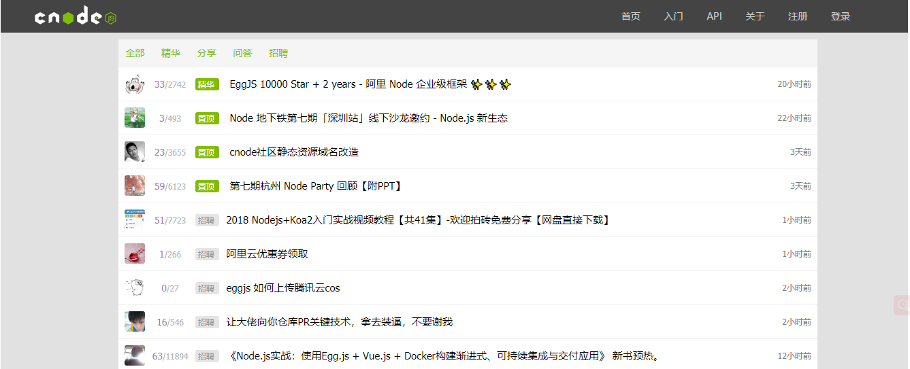

-
- Basic info. 基本信息
- 个人信息: 李名江 / 男
- 毕业院校: 河北大学/机械设计制造及自动化
- 求职状态: 应届生
- 博客: www.jianshu.com
- GitHub: www.github.com/MingJiang3
-
- Experience. 个人项目
-
仿网易云音乐 移动版 源代码 Demo
炒鸡好看的 HTML5 音乐播放器，支持歌词、封面动画等，兼容现代浏览器和移动端，API 丰富、后台数据库用了LeanCloud 和 七牛(需要开服务器)
 -
在线画板 源代码 Demo
使用原生 js 编写,适配手机端和PC端，能进行一些简单画画、下载功能。
-
键盘导航 源代码 Demo
简洁好用的导航，只需按对应的按键，就能打开你想要的网站。还能自定义按键哦！
 -
仿CNODE社区 源代码 Demo
根据CNODE社区提供的接口用 Vue 仿的社区（只做了最主要的功能）
 -
Resume 源代码
设计优雅的在线简历的源码，里面用到一些缓动库，LeanCloud等，还有其他项目在github里
-
- Skill. 技能
前端
-
HTML / CSS
能够编写语义化的 HTML，模块化的 CSS，完成较复杂的布局
能独立制作精美网页，掌握 CSS3 动画、过渡效果、响应式等常用技术。
了解 less Sass Autoprefixer 等CSS预处理和模块化工具
-
JavaScript
熟悉原生 Javascript，能脱离 jQuery 等类库编码
能运用模块化、面向对象的方式编程
熟悉 jQuery axios 的使用
-
其他
了解 Webpack , parcel 等前端自动化工具
理解 MVC、MVVM 等思想，可以熟练使用相关的库，如 Vue 的组件、Vue-Router、双向绑定等
会使用 REM、vw/vh、媒体查询 等技术制作适配手机设备的页面
了解前端安全、性能优化方面的一些知识
了解微信小程序的开发
后端
-
Node.js
了解 Node.js 的开发

李名江的简历
-
- Contact. 联系方式
- 手机: 15931878778
- 邮箱: 457918455@qq.com
- 微信: 同手机号
- QQ: 457918455
-
- Application. 应聘岗位
- 前端工程师